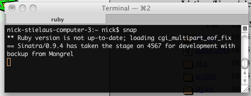
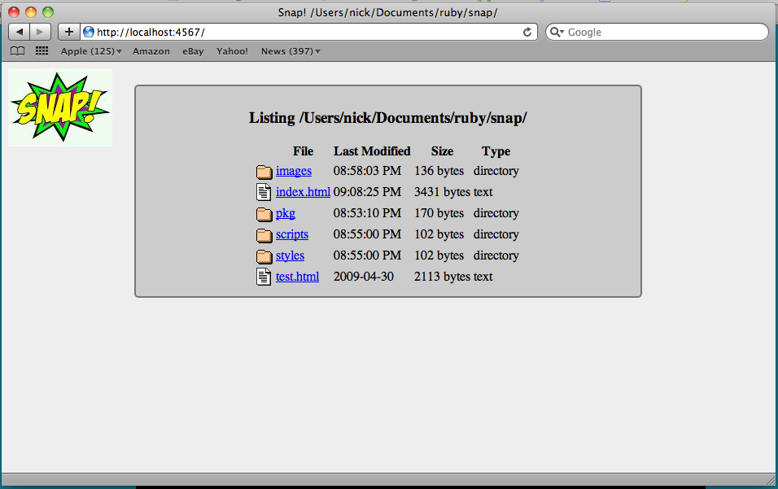
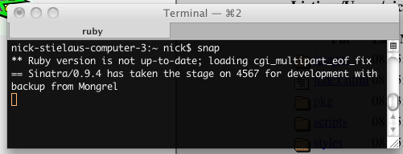
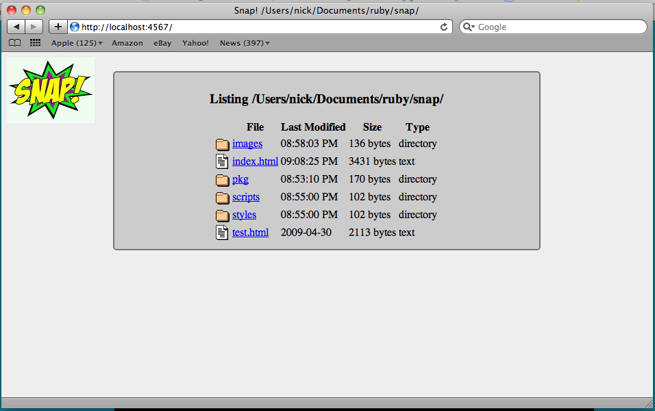

by nstielau
by nstielau
Directory listings faster than you can say 'onomatopoeia'.
Why
Have you ever...
- Wanted an instant/temporary file GUI on a remote server?
- Wanted to browse through some HTML documentation in a place that wasn't conveniently accessible?
- Wanted to edit=>reload=>examine an HTML file, but didn't want to deal with Apache?
- Wanted an excuse to write a Sinatra app?
Installation
Easy as:
gem install snap
Use:
Run Snap, chrooted to the current directory View at: localhost:4567
$: snap
Run Snap, chrooted to your home directory View at: localhost:4567
$: snap -r ~
Run Snap with a different port View at: localhost:3000
$: snap -p 3000
View other Snap options:
$: snap -h
Usage: snap [options]
-e env
-s server
-p port
-r root
Screenshots
Start up Snap...

and start looking around


and start looking around

Authors
Nick Stielau (nick.stielau@gmail.com)
Contact
(nick.stielau@gmail.com)
Warning
Snap is potentially riddled with security holes. Snap! is meant for local or temporary use.
Code
Dig in @ http://github.com/nstielau/snap/
Download
You can download this project in either zip or tar formats.
You can also clone the project with Git by running:
$ git clone git://github.com/nstielau/snap